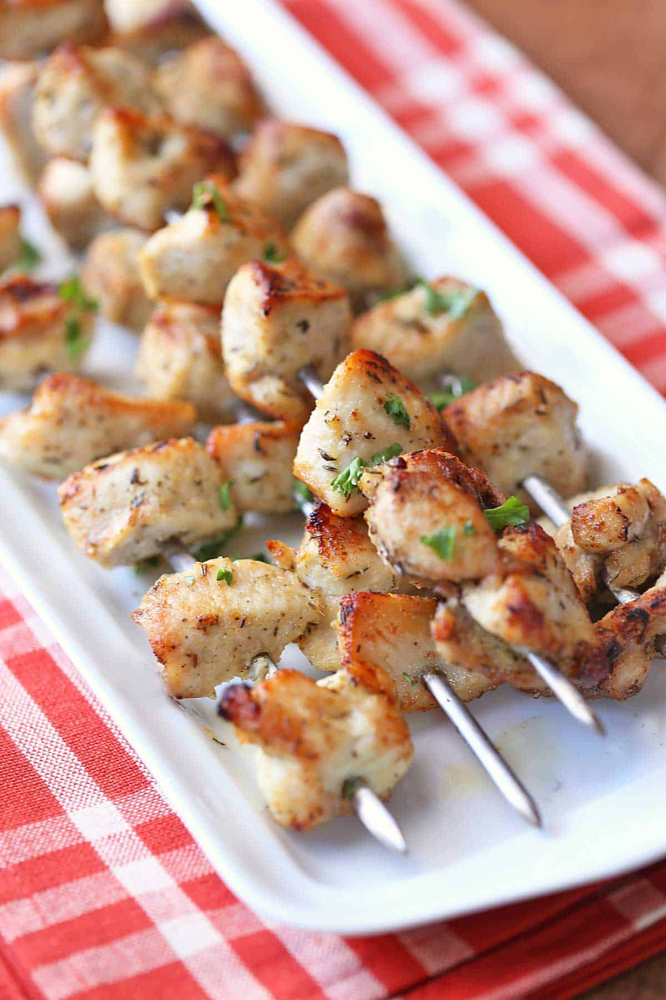

Chicken Kabobs

Description
These tasty chicken kabobs are baked in the oven,
then finished under the broiler.
The result: juicy kabobs that everyone will love!
Prep Time: 15 minutes | Cook Time: 20 minutes |
Total time: 35 minutes | Servings: 4 Servings
Ingredients
- 2 tablespoons olive oil
- 1/2 teaspoon sea salt
- 1/4 teaspoon black pepper
- 1 teaspoon onion powder
- 1 teaspoon garlic powder
- 1 teaspoon dried thyme
- 2 large chicken breasts (12 oz each)
Steps
- If using wooden skewers, soak them in water for 20 minutes
while you prepare the chicken.
- Preheat the oven to 450°F. Line a rimmed,
broiler-safe baking sheet with foil.
- In a large bowl, whisk together the olive oil, salt,
pepper, garlic powder, onion powder, and thyme.
- Cut the chicken breasts into cubes as shown in the video.
Add to the bowl and toss with the seasoned olive oil.
- Thread the coated chicken cubes on skewers. If you use
wooden skewers, place thin foil strips on their exposed
edges to prevent them from burning.
- Bake the kabobs until cooked through, for about 15 minutes.
- Switch the oven to broil. Place the baking sheet under the
broiler, and broil the chicken just until browned, for about
1 minute. Serve immediately.